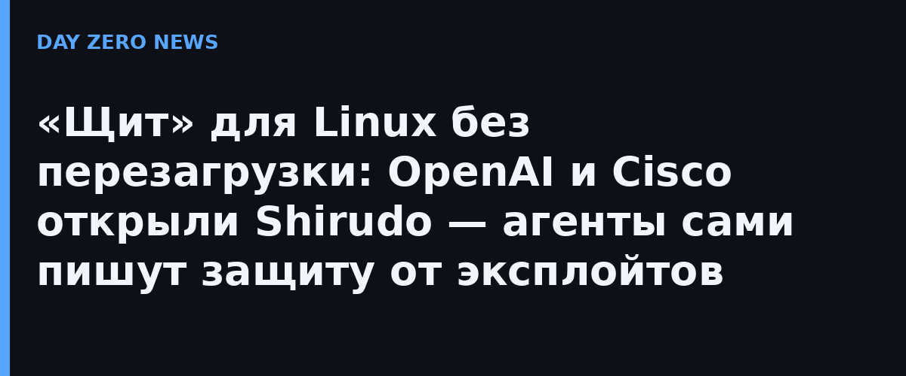

От момента, когда нашли уязвимость, до полноценного патча на всех серверах проходят дни и недели: фикс надо написать, протестировать, прогнать через staged-выкатку. Атакующий столько ждать не будет. Вторая ловушка: эксплойт и легитимные запросы часто зовут одну и ту же системную операцию Linux — заглушишь её нафиг, и сервис ляжет сам. Именно в этот зазор и нацелен Shirudo (яп. «щит»), анонсированный 23 ноября.
Shirudo построен на eBPF — технологии, позволяющей выполнять маленькие программы прямо внутри ядра. Рантайм предлагает четыре опоры: живая защита (щиты блокируют уязвимый путь кода без перезагрузки, сначала в режиме наблюдения), «оборона со скоростью машины» (ИИ-агентам дают программируемые управления, чтобы они сами расследовали уязвимость, писали целевой щит и проверяли его на реальных нагрузках — но развёртывание утверждает человек), доверенная поставка (каждый щит криптографически подписывается и проходит верификатор eBPF) и аппаратное подтверждение — модуль TPM ведёт проверяемую историю установки и снятия защит.
В совместном контрольном тесте (описание у Isovalent) щит, сгенерированный Codex, отбил попытку эксплуатации Java4Shell на работающем Elasticsearch — сервис не перезагружали ни разу. «Мы даём защитникам лучшие модели и инструменты, чтобы быстрее находить и чинить уязвимости, но найти баг сегодня не значит залатать все системы завтра», — прокомментировал запуск президент и сооснователь OpenAI Грег Брокман.
Проект выложен под лицензией BSD 2-Clause, eBPF-программы — под двойной BSD/GPL-лицензией (уточняет IT之家). OpenAI сводит в Shirudo свои исследовательские направления frontier-моделей, безопасности и инфраструктуры, Cisco — экспертизу в сетевой и системной безопасности; обе компании зовут разработчиков и исследователей дорабатывать проект вместе. Логика простая: когда один коллектив нашёл удачный щит, остальным не пришлось бы начинать с нуля — а на волне ИИ-ускоренных атак такие «костыли на часы» становятся штатным инструментом эксплуатации.